규칙으로 생각하는 AI,
데이터로 배우는 AI
오늘은 질문 두 개를 따라갑니다
논리 → 추론 → 탐색 → 전문가 시스템
기계학습Machine Learning의 정의 · 학습의 의미 · 지도/비지도/강화
두 부분은 이어집니다. Part 1 끝에서 전문가의 지식을 규칙으로 다 옮기는 일은 어렵고 비싸다는 문제가 나오고, 그 문제를 푸는 방법이 Part 2의 기계학습입니다.
규칙기반 인공지능 rule-based AI
논리 — 결론을 올바르게 끌어내는 법칙
사람의 생각이 논리적인지는 객관적이고 명확한 사고 법칙을 지키는지로 판단합니다. "달걀이 먼저야!" "닭이 먼저라니까!" 같은 논쟁에서도 결국 따지는 것은 주장의 논리성입니다.
AI 학자들은 이 논리를 규칙기반 인공지능에 가져왔습니다. 그래서 논리는 AI에서 지식을 표현knowledge representation하고 추론inference하는 도구입니다.
규칙기반 AI가 "판단한다"는 것은 주어진 사실과 규칙에서 결론을 끌어내는 것입니다. 결론을 올바르게 끌어내는 법칙이 논리이므로, 6장은 논리에서 시작합니다.
규칙기반 AI = 사실 + 규칙 → 결론
교안 그림 — 승인되면 설치, 품질 검사를 거치면 설정, 이상이 없으면 시작
규칙기반 AI는 조건과 행동을 짝지은 규칙을 여러 개 모아 둡니다. 지금의 사실이 어떤 규칙의 조건에 맞으면 그 규칙을 실행해 결론을 냅니다.
예를 들어 사실이 APPROVED(승인됨)라면 첫 번째 규칙이 맞으므로 INSTALL(설치)을 실행합니다.
이 if 조건 then 행동 형태가 바로 다음 섹션에서 배울 조건 명제 p → q입니다.
그래서 6장은 이 순서로 진행합니다
논리는 따로 떨어진 이론이 아니라 탐색, 문제 해결 알고리즘, 지식처리, 전문가 시스템의 기반입니다. 앞 단계가 다음 단계의 재료가 되므로 순서대로 보면 됩니다.
명제와 논리 연산
논리의 가장 작은 단위는 명제proposition입니다. 명제 여러 개를 연산자로 묶어 더 복잡한 문장(합성 명제)을 만들고, 그 참·거짓을 계산하는 것이 명제 논리propositional logic입니다.
컴퓨터가 논리를 다룰 수 있는 이유는 이 참·거짓을 기계적으로 계산할 수 있기 때문입니다.
| 명제 논리 | 문장 전체의 참·거짓 |
| 술어 논리 | 문장을 주어·술어로 나눠 판단 → 03 |
1학기 이산수학의 명제 논리와 같습니다. 이산수학은 부정을 ¬p, 교재는 ~p로 씁니다.
명제 = 참·거짓이 하나로 정해지는 문장
14는 짝수라 틀린 말. 하지만 누구나 거짓이라고 똑같이 판단하므로 명제입니다.
맛있다는 사람도, 아니라는 사람도 있습니다. 참·거짓이 하나로 정해지지 않으므로 명제가 아닙니다.
판단 기준은 "참인가"가 아니라 "누가 판단해도 참·거짓이 하나로 정해지는가"입니다. 거짓인 문장도 명제입니다. 둘 이상의 명제를 묶은 것은 합성 명제라고 합니다.
논리 연산 4가지 — 예외 한 줄만 기억하면 됩니다
p와 q는 각각 T 또는 F이므로 두 값을 짝지으면 4가지 경우가 나옵니다.
연산마다 결과가 나머지와 다른 한 경우만 외우면, 나머지 세 경우는 모두 그 반대입니다. 오른쪽 표의 맨 끝 열이 그 한 경우입니다.
읽는 법: ~p "p가 아니다", p ∨ q "p 또는 q", p ∧ q "p 그리고 q", p → q "p이면 q이다"
| ~p | 부정 · not | 참·거짓을 뒤집는다 |
| p ∨ q | 논리합 · or | 둘 다 F일 때만 F |
| p ∧ q | 논리곱 · and | 둘 다 T일 때만 T |
| p → q | 조건 · if–then | p = T, q = F일 때만 F |
진리표 truth table — 형광펜 칸이 각 연산의 예외입니다
| p | q | p ∨ q | p ∧ q | p → q |
|---|---|---|---|---|
| T | T | T | T | T |
| T | F | T | F | F |
| F | T | T | F | T |
| F | F | F | F | T |
논리합 ∨ — 하나만 T여도 T. 그래서 둘 다 F인 줄만 F.
논리곱 ∧ — 둘 다 T여야 T. 그래서 둘 다 T인 줄만 T.
조건 → — p가 T, q가 F인 줄만 F.
교재 〈표 6.2〉 논리합 · 〈표 6.3〉 논리곱 · 〈표 6.4〉 조건을 한 표로 합쳤습니다. 부정 ~p는 T와 F를 뒤집기만 합니다(〈표 6.1〉).
조건 p → q implication — 가정이 거짓이면 결과는 늘 참
"3 × 2 = 5라면,
런던은 미국의 수도이다."
F → F = T
둘 다 틀린 말인데 결과가 T라서 가장 헷갈리는 부분입니다.
p → q는 "p가 참인 경우에는 q도 참이다"라는 주장입니다.
이 주장이 틀렸다고 확인되는 경우는 p가 참인데 q가 거짓인 경우 하나뿐입니다.
p가 거짓이면 이 주장이 다루는 상황 자체가 아니므로 틀렸다고 할 수 없고, 그래서 T로 둡니다.
이산수학에서는 p를 전건(가정), q를 후건(결론)이라 부릅니다.
예문은 3단계로 풉니다
"유채꽃이 노랗다면, 바다가 육지이다."
- 부분 명제마다 참·거짓 정하기
유채꽃이 노랗다 = T, 바다가 육지이다 = F - 연결어를 기호로 바꾸기
"~라면"은 → 이므로 T → F - 진리표에서 그 줄 찾기 → F
"~이거나" = ∨ "~이고" = ∧ "~라면" = →
| 사과는 채소이거나, 시금치는 채소이다 | F ∨ T = T |
| 사과는 과일이고, 시금치는 채소이다 | T ∧ T = T |
| 서울은 대한민국의 수도이고, 3 × 2 = 5이다 | T ∧ F = F |
교안 〈표 6.4〉의 머리글 "~p → q"는 오류입니다. p → q가 맞습니다.
수업에서 직접 짚어 주신 교안 오류입니다. 이 자료의 진리표는 p → q로 고쳐 두었습니다.
술어 논리 — 문장을 쪼개서 본다
명제 논리는 문장 하나를 통째로 기호 하나(p)로 봅니다. 술어 논리predicate logic는 문장을 대상(주어)과 술어predicate(성질이나 관계)로 나눠서 참·거짓을 따집니다.
이렇게 쪼개면 여러 문장의 공통점을 표현할 수 있고, 대상들 사이의 관계도 나타낼 수 있습니다.
1학기 이산수학의 술어 P(x)와 같은 개념입니다. P(x)는 x에 무엇을 넣느냐에 따라 참·거짓이 달라집니다.
명제 논리로는 공통점을 적을 수 없습니다
= p
= q
두 문장은 모두 "남자"라는 같은 성질을 말합니다. 하지만 명제 논리에서는 서로 다른 기호 p, q일 뿐이라 둘이 같은 성질을 말한다는 사실을 표현할 방법이 없습니다. 술어 논리는 이 문제를 풀려고 문장을 쪼갭니다.
괄호 밖은 술어, 괄호 안은 대상
"영철이는 남자다"
대상 하나 → "영철"이 "남자"라는 성질을 가진다
"영철의 아버지는 김춘추 씨다"
대상 둘 → 두 사람 사이에 "아버지" 관계가 있다
이제 영철과 민수의 문장은 남자(영철), 남자(민수)가 됩니다. 같은 술어 "남자"를 쓰므로 공통점이 식에 그대로 드러납니다. 대상이 두 개인 술어로는 관계도 나타낼 수 있습니다.
대상 자리에 x를 두면 규칙 하나로 여러 대상을 다룹니다
남자(x)
x에 누가 들어가느냐에 따라 T/F가 달라집니다. 그래서 그 자체로는 명제가 아닙니다.
수식도 같습니다. x² + 5x + 6 = 0은 x = −2 또는 −3일 때만 T이고, 다른 값이면 F입니다.
사람(x) → 죽는다(x)
"모든 사람은 죽는다"를 "x가 사람이면 x는 죽는다"라는 규칙 하나로 적습니다. 이 규칙은 소크라테스에게도, 다른 누구에게도 그대로 적용됩니다.
08 전문가 시스템의 소크라테스 예제가 바로 이 형태입니다.
여기까지 정리
01 논리 · 02 명제와 논리 연산 · 03 술어 논리
- 규칙기반 AI는 사실 + if–then 규칙 → 결론으로 판단한다. 결론을 올바르게 끌어내는 법칙이 논리.
- 명제 = 참·거짓이 하나로 정해지는 문장. 거짓이어도 명제, "맛있다"처럼 판단이 갈리면 명제가 아님.
- 예외 한 줄: ∨ 둘 다 F만 F · ∧ 둘 다 T만 T · → p = T, q = F만 F (가정이 거짓이면 늘 T).
- 술어 논리 = 술어(대상). 남자(영철)는 성질, 아버지(김춘추, 영철)는 관계. x를 쓰면 규칙 하나로 여러 대상에 적용.
추론 — 아는 것에서 모르는 것을 끌어내기
01–03에서 논리의 재료(명제, 술어)를 배웠습니다. 이제 그 재료로 새로운 사실을 만들어내는 방법을 봅니다.
추론inference · reasoning은 알려진 사실이나 명제를 근거로 삼아, 아직 모르는 사실에 대한 판단이나 결론을 이끌어내는 사고 과정입니다. 글의 앞뒤 사실로 미루어 짐작하는 것과 같은 원리입니다.
추론에 주로 쓰이는 프로그래밍 언어가 Prolog(프롤로그)입니다. 08에서 다시 나옵니다.
"규칙기반 AI에서 추론이 중요한 이유는?"
— "주어진 몇 가지 사실들과 추론 규칙들을 바탕으로 추론하여 새로운 사실들을 생성해낼 수 있기 때문이지요."
"그러면 인간이 직접 알 수 없는 사실들도 AI가 모두 찾아내어 적용하겠네요?" — "그렇지요!"
추론의 세 종류
| 종류 | 방식 | 특징 | 교안 예시 |
|---|---|---|---|
| ① 귀납 추론 induction | 개별적인 사실들 → 일반적인 결론 | 논리적 필연성이 적음. 새 지식·이론의 발견과 확장에 쓰임 | 까마귀 1, 2, …, n이 까맣다 → "모든 까마귀는 까맣다" |
| ② 연역 추론 deduction | 전제 → 다른 결론을 도출 | 가장 널리 쓰임. 최초의 대전제가 가장 중요한 근거. 확장성은 부족하나 논리의 일관성이 장점 | 삼단논법 — 소크라테스는 죽는다 |
| ③ 유비 추론 analogy = 유추 | 두 대상에서 어떤 현상이 유사·일치하므로 다른 현상도 유사·일치할 것이라 추론 | 모르던 새로운 영역을 이해하는 데 도움 | 양말 : 발 = 장갑 : 손 Socks is to foot as gloves is to hand |
교안 "여기서 잠깐!" — 귀납은 여러 사실 → 일반적 결론, 연역은 소전제 + 대전제 → 새로운 결론
구분 기준: 결론이 반드시 참인가, 새 지식을 만드는가
연역 — 전제가 참이면 결론도 반드시 참입니다. 대신 결론은 전제 안에 이미 들어 있던 내용을 꺼낸 것이라 지식의 범위가 넓어지지 않습니다(확장성 부족). 규칙기반 AI가 주로 쓰는 방식입니다.
귀납 — 까마귀 n마리를 봤다고 n+1번째도 까맣다는 보장은 없으므로 결론이 틀릴 수 있습니다(필연성 적음). 대신 관찰하지 않은 경우까지 말해 주므로 새 지식을 만듭니다. 기계학습Machine Learning이 이 방식입니다(12).
유비 — 이미 아는 관계(양말 : 발)를 새 대상(장갑 : ?)에 그대로 옮겨 적용합니다.
삼단논법 syllogism — 연역 추론의 예
대전제 - 소크라테스는 사람이다.
소전제 - 사람은 모두 죽는다.
결론 - 따라서 소크라테스는 죽는다.
두 전제가 참이면 결론은 반드시 참입니다. 이것이 연역의 "필연성"입니다.
일반적인 삼단논법에서는 대전제 = 일반 규칙("사람은 모두 죽는다"), 소전제 = 개별 사실("소크라테스는 사람이다")입니다.
교안은 두 이름이 반대로 붙어 있습니다. 시험에서 어느 쪽 기준으로 쓸지는 수업에서 확인이 필요합니다(맨 뒤 "확인 필요" 1번).
탐색 — 출발에서 목표까지 가는 길 찾기
규칙기반 AI가 문제를 푼다는 것은, 가능한 상태들 가운데에서 출발 상태에서 목표 상태까지 가는 길을 찾는 것입니다. 이것을 탐색search이라고 합니다.
이 섹션은 세 가지를 다룹니다.
- 어느 방향으로 — 순방향 / 역방향 / 양방향
- 어떤 순서로 — 깊이 우선(DFS) / 너비 우선(BFS)
- 무엇을 참고해서 — 휴리스틱 탐색, 최소최대 탐색
1학기 자료구조의 그래프 순회와 같은 내용입니다. 상태 하나가 정점(node), 상태를 바꾸는 규칙 하나가 간선입니다.
(1) 추론을 통한 탐색 — 세 방향
| 방향 | 진행 |
|---|---|
| 순방향 추론 forward chaining | 출발 상태 → 목표 상태 |
| 역방향 추론 backward chaining | 목표 상태 → 출발 상태 |
| 양방향 추론 bidirectional | 순방향과 역방향을 접합 |
순방향은 가진 사실에서 출발해 규칙을 적용하며 결론을 늘려 갑니다. 역방향은 증명하고 싶은 목표에서 출발해 "이것이 참이려면 무엇이 참이어야 하나"를 거슬러 확인합니다. 08의 "Is Socrates die?" 질의가 역방향 방식이고, Prolog가 이렇게 동작합니다.
(2)·(3) 깊이 우선 탐색 vs 너비 우선 탐색
깊이 우선 탐색Depth-First Search, DFS — 첫 정점을 방문한 뒤 왼쪽으로 계속 내려가고, 더 갈 정점이 없으면 되돌아와 순환적으로 탐색합니다.
너비 우선 탐색Breadth-First Search, BFS — 시작 정점에 연결된 모든 정점을 왼쪽부터 방문한 뒤, level 순서(0 → 1 → 2 …)로 탐색합니다.
방문 순서를 직접 따라가 보기
1 → 왼쪽 자식 2 → 그 왼쪽 자식 3 (더 내려갈 곳 없음, 2로 되돌아감) → 2의 다음 자식 4 (되돌아감) → 1로 돌아가 오른쪽 자식 5 → 6
level 0의 1 → level 1의 2, 3 → level 2의 4, 5, 6
DFS는 한 갈래만 따라가므로 메모리를 적게 쓰지만, 찾은 경로가 가장 짧다는 보장이 없습니다.
BFS는 가까운 level부터 보므로 단계 수가 가장 적은 경로를 찾지만, 한 level의 정점을 모두 저장해야 해서 메모리를 많이 씁니다.
자료구조 연결 — DFS는 스택stack(또는 재귀), BFS는 큐queue로 구현합니다. 되돌아오기 = 스택의 pop, level 순서 = 큐의 선입선출(FIFO).
(4) 휴리스틱 탐색 heuristic search
| 구분 | 의미 | 예 |
|---|---|---|
| 무정보 탐색 uninformed search | 사전 정보 없이 정해진 순서대로만 탐색 | DFS, BFS |
| 휴리스틱 탐색 heuristic search | 탐색 과정에서 경험적 지식을 활용 | 오른쪽 목록 |
무정보 탐색은 목표가 어느 쪽에 있는지 모르고 하나씩 확인합니다. 휴리스틱 탐색은 목표에 더 가까워 보이는 쪽을 먼저 확인합니다. 예: 길 찾기에서 목적지까지 직선거리가 짧은 교차로부터 가 보기. 상태가 너무 많아 전부 볼 수 없을 때 필요합니다.
- 범용 휴리스틱 General-purpose heuristics
- 최상 우선 탐색 Best-first search
- 분기 한정 탐색 (균일 비용 탐색) Branch and bound
- A* 알고리즘 → 07
- 언덕 오르기 Hill climbing
- 빔 탐색 Beam search
(5) 최소최대 탐색 minimax search
- 주로 상대가 있는 2인용 게임에서의 탐색 — 예: 틱택토Tic-Tac-Toe, 가로·세로·대각선으로 3개가 연속되면 이김
- 나의 가능성은 최대, 상대방의 가능성은 최소로 하는 전략을 탐색
- 탐색이 필요 없는 경로를 잘라내는 작업 = 전지 작업pruning(가지치기)
내 차례에는 둘 수 있는 수 중 나에게 가장 좋은(최대) 수를, 상대 차례에는 상대가 나에게 가장 나쁜(최소) 수를 둔다고 가정하고 몇 수 앞까지 계산합니다. 핵심은 상대도 최선을 다한다고 가정하는 것입니다.
최소최대 탐색의 대표적인 가지치기 방법이 알파-베타 가지치기alpha-beta pruning입니다. 결과는 그대로 두고, 결과에 영향이 없는 가지를 탐색하지 않아 속도를 높입니다.
알고리즘 algorithm
- 문제 해결을 위한 단계들을 체계적으로 명시한 것, 문제를 해결하는 방법의 상세한 특징을 기술한 것
- AI에서 자주 나오는 용어 — 예: 신경망의 역전파 알고리즘backpropagation
- 표현 방법: 순서도flowchart, 유사 코드pseudocode, 언어적 표현 등
- 알고리즘은 단 하나만 있는 것이 아니다
같은 문제를 푸는 방법이 여러 개라는 뜻입니다. 알고리즘 과목에서 같은 정렬 문제를 버블 정렬, 퀵 정렬 등으로 풀고 속도를 비교하는 것이 그 예입니다.
(2) 생활 속의 알고리즘
- 기초적인 수학 연산 — 덧셈·곱셈 방법, 최대공약수 구하기
- 라면 조리법 — 물의 양, 불의 세기, 끓이는 시간
물 붓기 → 끓이기 → 면·스프 넣기 → 완성 - 하루의 일정 계획 — 기상 시간, 식사 시간, 버스·지하철 이용
- 가전제품 사용 매뉴얼 — 세탁기·전자레인지의 단계별 사용 설명서
- 지하철 환승 방법 — 어느 역에서 환승하는 것이 효율적인지 판단
- 알파고 같은 인공지능 방법론 — 바둑·게임 등 복잡한 것의 해결 방법
공통점: 모두 정해진 단계를 순서대로 따르면 결과가 나온다는 점입니다.
(3) 휴리스틱 heuristic — 경험에 기댄 빠른 판단
- 비슷한 문제에 대한 과거의 경험을 바탕으로 직관적으로 판단해 선택하는 의사결정 방식
- 논리적이거나 최적의 방법을 보장하지는 않지만, 만족할 만한 해결책을 비교적 빠르게 찾는 실용적인 방법
- AI, 심리학, 경제학 분야에서 많이 사용
| 알고리즘 | 휴리스틱 | |
|---|---|---|
| 근거 | 체계적으로 명시된 단계 | 과거 경험의 직관적 판단 |
| 결과 | 단계를 따르면 정해진 답 | 최적 보장 X, 만족할 만한 답 |
| 속도 | 문제가 크면 느릴 수 있음 | 비교적 빠름 |
상태가 너무 많아 다 볼 수 없을 때, 알고리즘 안에 휴리스틱을 넣어 확인 순서를 정합니다. 05의 휴리스틱 탐색과 07의 A*가 이 방식입니다.
휴리스틱의 예 — 폴리아 《How to Solve It》
- 문제를 이해하기 어려우면 그림으로 그려보기
- 해답을 얻었다고 가정하고 반대 방향으로 유도해보기
- 문제가 추상적이면 구체적인 예를 시도해보기
수학자 폴리아G. Polya가 정리한 문제 해결 요령입니다. 어느 것도 "반드시 답이 나온다"는 보장은 없지만, 경험상 답에 빨리 다가가게 해 줍니다. 그래서 알고리즘이 아니라 휴리스틱입니다.
2번 "반대 방향으로 유도"는 05의 역방향 추론과 같은 발상입니다.
A* 알고리즘 A* algorithm
- 최상 우선 탐색best-first search 중 가장 잘 알려진 방법, 문제 해결에 매우 효과적인 탐색 알고리즘
- 출발점에서 목표지점까지 최적 경로를 찾는 방법 — 가장 비용이 적거나 짧은 경로
- 평가 함수 fevaluation function를 사용해 다음에 이동할 경로를 결정
그림 6.10 읽기와 평가 함수
S(출발)에서 G(목표)로 가야 하는데 가운데 회색 장애물이 막고 있습니다. A*는 갈 수 있는 칸마다 평가 함수 f 값을 계산해 가장 유망한 칸부터 넓혀 가고, 그 결과 장애물을 돌아가는 가장 짧은 경로(굵은 선)를 찾습니다.
f(n) = g(n) + h(n)
g(n) 출발점에서 칸 n까지 실제로 든 비용 · h(n) n에서 목표까지 남은 비용의 휴리스틱 추정값. f가 가장 작은 칸을 먼저 넓힙니다.
g만 쓰면 모든 방향으로 똑같이 넓혀 느리고(균일 비용 탐색), h만 쓰면 목표 쪽으로만 가다 더 긴 경로를 고를 수 있습니다. 둘을 더하면 h가 실제보다 크게 추정하지 않는 한 최단 경로를 찾습니다.
(5) 8-Queens 문제
- 체스에서 유래 — 서로를 공격하지 않는 위치에 8개의 퀸(Q)을 배치하는 문제
- 퀸은 수평, 수직, 대각선 방향으로 몇 칸이든 이동할 수 있다
- 64칸에 퀸 8개를 놓는 경우의 수는 약 44억 가지 — 보통 AI 방법으로 프로그램해 해답을 구하며, 해답은 여러 개
보충: "약 44억"은 64칸 중 8칸을 고르는 조합 ₆₄C₈ = 4,426,165,368에서 나온 값입니다.
해답을 보면 규칙이 보입니다
퀸이 가로·세로·대각선으로 공격하므로 같은 행, 같은 열, 같은 대각선에 퀸이 두 개 이상 있으면 안 됩니다. 그래서 8개 행과 8개 열에 하나씩 들어가고, 열 위치에 1~8이 한 번씩만 나옵니다.
44억 가지를 다 검사하지 않고, 한 행씩 놓으면서 이미 공격받는 칸은 제외하면 검사할 경우가 크게 줄어듭니다.
알고리즘 과목 연결 — 8-Queens는 백트래킹backtracking 대표 예제입니다. 놓을 자리가 없으면 이전 행으로 되돌아가며, DFS와 같은 틀입니다.
지식처리 기술과 지식 획득
- 규칙rule은 "If ooo then xxx" 형식으로 표현
- 지식처리 기술은 규칙이나 프레임frame에 의한 표현
- 의미 네트워크semantic network — 개념 사이의 관계를 링크link로 연결, 지식을 체계화해 표현하기에 적합
의미 네트워크는 개념을 정점, 관계를 링크로 그린 그래프입니다. "세퍼드 → 개" 링크가 있으면, "개"에 저장된 성질을 세퍼드에 따로 적지 않아도 세퍼드가 그 성질을 가진다고 추론할 수 있습니다.
(2) 규칙기반 시스템 — 추론 규칙 표
규칙기반 시스템은 사실fact을 담은 지식베이스knowledge base와 If–then 형태의 추론규칙inference rules으로 이루어집니다. 질의query가 오면 둘을 이용해 추론한 뒤 결과를 알려줍니다.
| 추론 규칙 | 이름 | 읽는 법 |
|---|---|---|
| P ∴ P ∨ Q | Addition (가산) | P가 참이면 P ∨ Q도 참 |
| P, Q ∴ P ∧ Q | Conjunction (논리곱) | P와 Q가 각각 참이면 P ∧ Q도 참 |
| P ∨ Q, ¬P ∴ Q | Disjunctive Syllogism (선언적 삼단논법) | P 또는 Q인데 P가 아니면 Q |
| P → Q, Q → R ∴ P → R | Hypothetical Syllogism (가언적 삼단논법) | P이면 Q, Q이면 R이므로 P이면 R |
∴는 "따라서". 각 규칙은 쉼표로 나열한 전제가 모두 참이면 ∴ 뒤의 결론도 참이라는 뜻입니다. 가언적 삼단논법은 02의 조건 명제(→) 두 개를 이어 새 조건 명제를 만듭니다.
예: 소크라테스의 죽음 (그림 6.15)
"Is Socrates die?" — 사실 Socrates is a human과 규칙 If X is a human, then X dies가 결합해 "소크라테스는 죽는다"를 이끌어냅니다.
핵심: "김대수는 죽는다", "워리는 죽는다"는 지식베이스에 직접 적혀 있지 않습니다. 사실 3개 + 규칙 2개만으로 추론해 새 사실을 만듭니다.
규칙이 03의 술어 논리 형태(X)라서 하나의 규칙이 모든 사람에게 적용됩니다. 규칙기반 시스템은 Prolog로 편리하게 프로그래밍할 수 있습니다.
Prolog로 쓰면 보충
교안 예시를 Prolog 문법으로 옮긴 것입니다(교수님이 설명하신 내용 아님).
dies(socrates)를 물으면 Prolog는 목표에서 출발해 human(socrates)가 참인지 찾습니다. 05의 역방향 추론입니다.
규칙 하나로 여러 사실에 대해 답을 만드는 구조가 그대로 드러납니다.
(3) 인간 전문가를 대신하는 전문가 시스템 Expert System
- 컴퓨터 자문 시스템의 일종 — 특정 분야 인간 전문가의 전문 지식과 AI의 추론 능력을 이용한 문제 해결 시스템
- 전문가의 지식을 정리해 지식베이스부터 구축 → 사용자가 질문하면 추론기구inference engine가 지식베이스로 추론 → 결과를 사용자에게 전달
지식베이스(무엇을 아는가)와 추론기구(어떻게 결론을 내는가)가 분리되어 있어서, 분야가 바뀌어도 추론기구는 두고 지식베이스만 바꾸면 됩니다.
- 전문가가 지식을 지식베이스에 입력
- 사용자가 질문
- 추론기구가 사실과 규칙으로 추론
- 결과를 사용자에게 대답
(4) 전문가 시스템의 적용 분야
"첫째는 실제 응용이 중요했고요, 둘째는 A* 알고리즘 이후 뚜렷한 알고리즘 개발이 어려웠던 점도 있어요."
"규칙기반 AI 알고리즘을 연구하는 학자들도 많나요?" — "그럼요. 세계적으로 상당히 많지요."
전문가의 지식을 손쉽게 쓸 수 있다는 장점 때문에 자동차 전문가 시스템 등 다양한 분야에 적용됩니다.
| 이름 | 기능 | 개발 기관 |
|---|---|---|
| MYCIN | 백혈병 진단 (교안 표기 — 확인 필요) | 스탠퍼드 대학 |
| DENDRAL | 질량 분석의 해설 | 스탠퍼드 대학 |
| PROSPECTOR | 광맥 탐사 | SRI International |
| AIRPLAN | 항공기 이착륙 관리 | U.S. Army |
| LOGOS | 자동 번역 | Logos Computer System |
| ASK | 자연어 DB 관리 시스템 | Caltech |
Part 2로 이어지는 지점
규칙기반 AI는 지식을 사람이 규칙으로 넣어 주어야 합니다. 전문가의 지식을 빠짐없이 규칙으로 옮기는 일은 어렵고 비쌉니다.
그래서 질문이 바뀝니다. 규칙을 사람이 쓰지 않고, 데이터에서 자동으로 찾게 할 수는 없을까? 그 방법이 Part 2의 기계학습Machine Learning입니다.
12에서 "데이터는 싸고, 지식은 비싸다"라는 문장으로 다시 나옵니다.
규칙기반 AI — 사람이 준 규칙으로 연역
기계학습 — 데이터에서 귀납으로 규칙(패턴)을 찾음
여기까지 정리
04 추론 · 05 탐색 · 06 알고리즘과 휴리스틱 · 07 A*·8-Queens · 08 전문가 시스템
- 추론 = 아는 사실로 모르는 결론을 이끌어냄. 귀납 사례 → 일반(필연성 적음, 확장) · 연역 전제 → 결론(일관성, 확장성 부족) · 유비 유사성.
- 탐색 방향: 순방향(출발→목표) · 역방향(목표→출발) · 양방향. DFS 한 갈래 끝까지(스택) · BFS level 순서(큐) — 둘 다 무정보 탐색.
- 휴리스틱 = 경험 바탕의 직관적 판단, 최적 보장 X 대신 빠름. 최소최대: 나는 최대, 상대는 최소 + 가지치기.
- A* = 평가 함수 f로 최적 경로를 찾는 최상 우선 탐색. 8-Queens = 행·열·대각선이 안 겹치게, 약 44억 가지, 해답 여러 개.
- 전문가 시스템 = 지식베이스 + 추론기구. 사실 + If–then 규칙으로 질의에 답함(Prolog).
기계학습 입문 Machine Learning
세 용어는 포함 관계입니다
뉴스에서는 AI, 기계학습, 딥러닝을 섞어 쓰지만, 이 수업에서는 포함 관계로 구분합니다.
가장 넓은 것이 인공지능, 그 안에 기계학습, 다시 그 안에 딥러닝이 들어갑니다. 안쪽 원으로 갈수록 "지능을 어떤 방법으로 만드는가"에 대한 조건이 하나씩 붙습니다.
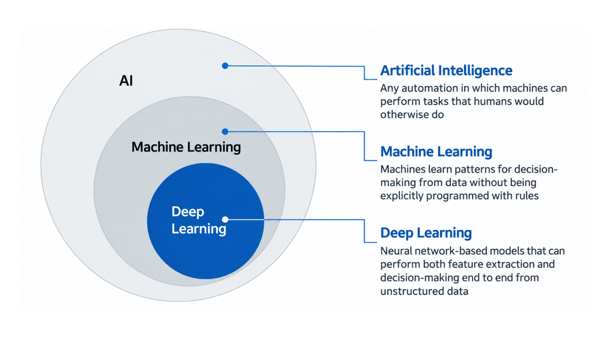
교안의 세 정의
| 영역 | 정의 |
|---|---|
| 인공지능 Artificial Intelligence | 사람이 하던 일을 기계가 수행하는 모든 자동화 |
| 기계학습 Machine Learning | 규칙을 명시적으로 프로그래밍하지 않아도, 기계가 데이터에서 의사결정용 패턴을 학습 |
| 딥러닝 Deep Learning | 신경망 기반 모델로, 비정형 데이터에서 특징 추출과 의사결정을 한 번에(end to end) 수행 |
용어 보충 — 특징 추출feature extraction: 원본 데이터에서 판단에 쓸 값을 뽑는 단계. end to end: 입력부터 출력까지 사람이 중간 단계를 설계하지 않고 모델 하나가 처리. 비정형 데이터unstructured data: 표 형태가 아닌 이미지·음성·텍스트.
세 단계를 가르는 질문
- 인공지능인가? 사람이 하던 판단을 기계가 대신하면 인공지능. 방법은 따지지 않습니다. 6장의 전문가 시스템도 인공지능입니다.
- 기계학습인가? 판단 규칙을 사람이 적었는지, 기계가 데이터에서 찾았는지를 봅니다. 그래서 전문가 시스템은 인공지능이지만 기계학습은 아닙니다.
- 딥러닝인가? 기계학습 중 신경망neural network을 쓰고, 봐야 할 부분(특징feature)까지 스스로 뽑아내면 딥러닝입니다.
딥러닝이 아닌 기계학습 — 사람이 "귀 모양", "털 색" 같은 특징을 정해 숫자로 넣으면, 기계는 그 숫자로 판단하는 규칙만 학습합니다.
딥러닝 — 픽셀 값을 그대로 넣으면 신경망이 어떤 모양을 봐야 하는지부터 최종 판단까지 한 번에 학습합니다.
생성형 AIGenerative AI는 딥러닝 안에 들어가는 영역입니다.
AI ⊃ 기계학습 ⊃ 딥러닝 ⊃ 생성형 AI
교안 그림에는 없고 수업에서 덧붙이신 내용입니다.
생성형 AI란 보충
생성형 AI는 학습한 데이터와 비슷한 새 데이터(텍스트·이미지·음성 등)를 만들어 내는 모델입니다.
예: GPT 같은 대규모 언어 모델Large Language Model, LLM, 이미지 생성용 확산 모델diffusion model. 지금 쓰이는 생성형 AI는 대부분 딥러닝 신경망 기반이라 위 포함 관계가 성립합니다.
통계학의 생성 모델generative model이라는 용어는 더 넓어서, 나이브 베이즈나 가우시안 혼합 모델처럼 딥러닝이 아닌 기계학습 모델도 포함합니다.
시험에서는 교수님 설명대로 "생성형 AI ⊂ 딥러닝"으로 쓰시면 됩니다.
기계학습의 두 가지 정의
기계학습은 컴퓨터가 명시적으로 프로그래밍되지 않고도 학습하는 능력을 갖게 하는 연구 분야다.
어떤 작업 T에 대한 프로그램의 성능을 P로 측정했을 때, 경험 E로 인해 성능이 향상되면 그 프로그램은 작업 T와 성능 지표 P에 대해 경험 E로부터 학습한다고 말한다.
첫 번째는 기계학습이 무엇인지를, 두 번째는 프로그램이 학습했는지를 어떻게 판정하는지를 말합니다.
Mitchell의 정의 = E · T · P
| 기호 | 영어 | 의미 |
|---|---|---|
| E | experience | 경험 — 학습에 쓰는 데이터 |
| T | task | 작업 — 모델이 수행할 일 |
| P | performance measure | 성능 지표 — 얼마나 잘했는지 재는 기준 |
세 가지를 모두 정해야 "학습"이라는 말을 쓸 수 있습니다. E가 늘었을 때 P로 잰 성적이 올라가면 학습한 것이고, 그대로라면 데이터를 아무리 많이 넣었어도 학습한 것이 아닙니다.
T 새 메일이 스팸인지 판정
E 스팸/정상 레이블이 붙은 과거 메일
= 훈련 데이터
P 올바르게 분류한 메일의 비율
= 정확도accuracy
기계학습을 쓰는 이유 네 가지
| 교안 | 풀어 보면 |
|---|---|
| ① 기존 방식으로는 수작업 조정이나 긴 규칙 목록이 필요한 문제 — ML 알고리즘 하나로 코드를 단순화하고 성능도 더 좋게 | 규칙이 너무 많은 문제. 스팸 필터에서 "무료", "당첨" 규칙을 사람이 계속 추가해야 하고, "무.료"처럼 바꾸면 또 고쳐야 합니다. 기계학습은 예시 메일로부터 스팸의 신호를 스스로 찾습니다. |
| ② 전통적 방식으로는 좋은 해법이 전혀 없는 복잡한 문제 | 규칙으로 적을 수 없는 문제. 음성 인식처럼 "이 파형이면 '가'"라는 규칙을 쓸 수 없으면 예시 데이터로 학습시킬 수밖에 없습니다. |
| ③ 변화하는 환경 — 새 데이터에 적응 | 새 데이터로 다시 학습하면 변화를 따라갑니다. 교수님은 여기서 일반화를 언급하셨습니다(11). |
| ④ 복잡한 문제와 대량의 데이터에서 통찰을 얻기 | 학습된 모델을 들여다보면 사람이 몰랐던 패턴을 발견합니다. |
11의 그림 세 개가 각각 ①(전통 vs ML), ③(자동 적응), ④(통찰)을 순서도로 보여 줍니다.
다른 점은 가운데 단계 하나
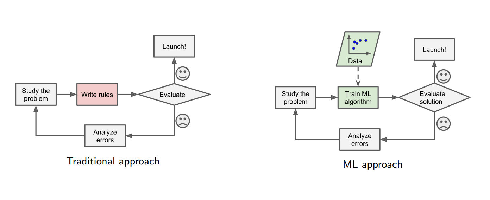
평가가 나쁘면 오류를 분석하고 처음으로 돌아가는 반복 구조loop는 두 방식이 같습니다. 다른 것은 가운데 칸입니다. 전통 방식은 사람이 규칙을 작성Write rules하고, ML 방식은 데이터로 알고리즘을 학습Train ML algorithm합니다.
순서도를 한 칸씩 읽기
- 문제를 연구합니다 Study the problem
- 사람이 규칙을 작성합니다 Write rules — 빨간 칸
- 평가합니다 Evaluate. 좋으면(😊) 출시 Launch!
- 나쁘면(☹) 오류를 분석 Analyze errors하고 1로 돌아감
2번 자리가 초록 칸 "ML 알고리즘 학습"으로 바뀌고, 위에서 데이터Data가 들어옵니다. 규칙을 만드는 주체가 사람에서 학습 알고리즘으로 바뀐 것입니다.
그래서 문제가 바뀌면 대응도 다릅니다. 전통 방식은 사람이 규칙을 다시 써야 하지만, ML 방식은 새 데이터로 다시 학습하면 됩니다. 이것이 다음 그림입니다.
변화에 자동으로 적응하기 Automatically adapting to change
따라가면 학습 → 평가(😊) → 출시 → 데이터 갱신 → 다시 학습입니다.
운영하면서 새 데이터가 쌓이면 데이터를 갱신하고Update data, 갱신된 데이터로 다시 학습합니다.
가운데 타원 자동화 가능Can be automated은 이 순환 전체를 사람 개입 없이 프로그램으로 돌릴 수 있다는 뜻입니다. 전통 방식은 "규칙 작성"이 사람 몫이라 자동으로 돌릴 수 없습니다.
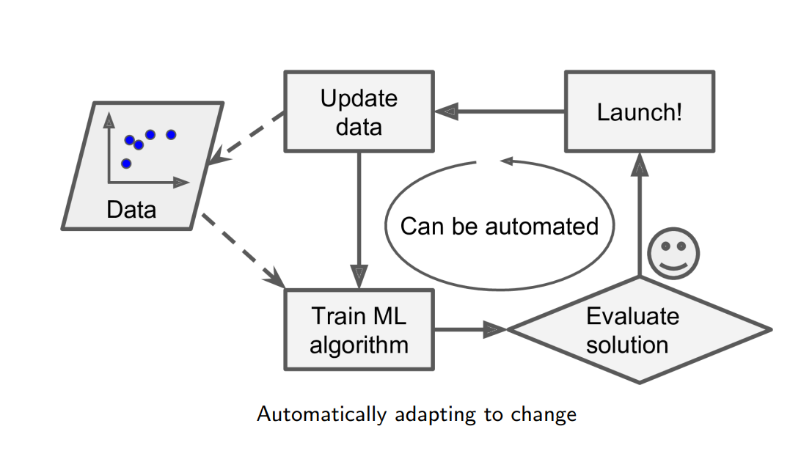
새로 들어오는 데이터를 처리할 수 있게 하는 것을 기계학습의 일반화generalization라고 합니다.
기계학습을 쓰는 이유(③ 변화하는 환경)를 설명하시면서 언급하셨습니다. 계속 새로 들어오는 데이터에도 모델이 잘 동작해야 하기 때문입니다.
일반화의 정확한 뜻 — "어떤 데이터든"은 아님
일반화는 학습에 쓰지 않은 새 데이터unseen data에서도 모델이 잘 동작하는 능력입니다.
조건이 하나 붙습니다. 새 데이터가 학습 데이터와 같은 종류(같은 분포distribution)여야 합니다. 고양이·개 사진으로 학습한 모델은 처음 보는 고양이 사진은 분류하지만, 음성 데이터는 처리하지 못합니다.
학습 데이터에만 잘 맞고 새 데이터에서 성능이 떨어지는 것을 과적합overfitting이라고 합니다.
일반화 성능은 학습에 쓰지 않고 남겨 둔 테스트 세트test set로 확인합니다(5주차 1차시).
문제에서 통찰 얻기 ML can help humans learn
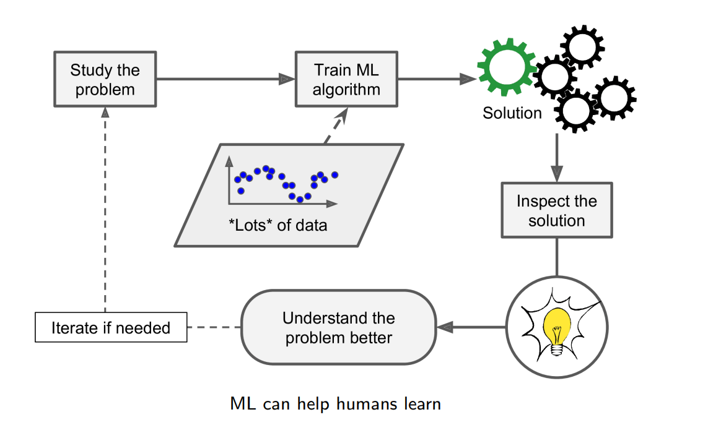
이번 그림은 방향이 반대입니다. 앞의 두 그림은 기계가 배우는 과정이었다면, 여기서는 사람이 배웁니다.
대량의 데이터(*Lots* of data)로 학습한 모델이 내놓은 해법을 들여다보면Inspect the solution 사람이 몰랐던 관계를 발견하고 문제를 더 잘 이해Understand the problem better하게 됩니다(💡). 필요하면 반복합니다Iterate if needed.
기계학습으로 대량의 데이터에서 숨은 패턴을 찾는 일을 데이터 마이닝data mining이라고 부릅니다(보충).
학습 = 사례에서 규칙을 끌어내기
| 용어 | 의미 |
|---|---|
| 추론Induction = 귀납 · 귀납적 추론 | 특정한 예시들의 집합에서 일반적인 규칙을 뽑아내는 과정 |
| 학습Learning | 데이터를 분석하고 거기서 자동으로 정보를 추출하는 컴퓨터 모델을 만드는 것 |
- 대부분의 경우 데이터는 싸고 풍부하지만, 지식은 비싸고 부족하다
- 데이터에 대한 좋고 쓸모 있는 근사approximation인 모델을 만든다 — 모든 것을 설명하지 못하더라도 데이터의 일부는 설명할 수 있다
두 문장 풀어 읽기
지식은 비싸다
쇼핑몰 구매 기록 같은 데이터는 가만히 있어도 쌓입니다. 하지만 그 기록에서 "어떤 고객이 다음에 무엇을 살지"라는 지식을 사람이 뽑으려면 전문가의 시간이 많이 듭니다.
그래서 학습의 목표는 싸고 많은 데이터에서 비싼 지식을 자동으로 뽑아내는 것입니다. 08 끝의 "규칙을 사람이 다 쓰기 어렵다"에 대한 답입니다.
근사다
학습 결과로 나온 모델이 모든 데이터를 완벽하게 설명할 필요는 없습니다. 쓸모 있을 만큼 설명하면 됩니다.
5주차에 배울 과적합은 이 원칙을 어기고 모든 데이터를 완벽히 맞히려다 생기는 문제입니다.
Induction을 추론이라고 부르셨습니다.
교재·다른 과목에서는 같은 말을 귀납 또는 귀납적 추론inductive reasoning으로 번역합니다. 세 표현은 모두 같은 개념입니다.
6장의 "추론"과 여기의 "추론" 구분하기
귀납Induction — 개별 사례 여러 개 → 일반 규칙. 스팸 메일 1,000통에 "무료"가 자주 나옴 → "무료가 들어간 메일은 스팸일 가능성이 높다". 기계학습의 학습이 이 방향입니다.
연역Deduction — 일반 규칙 → 개별 결론. "사람은 모두 죽는다" + "소크라테스는 사람이다" → "소크라테스는 죽는다". 6장 규칙기반 시스템이 이 방향입니다.
추론Inference — 위 둘을 포함하는 상위 개념. 6장의 "추론"은 inference, 이 섹션의 "추론"은 induction으로 읽으면 됩니다.
이산수학의 수학적 귀납법mathematical induction은 이름만 같을 뿐, 전제에서 결론을 반드시 끌어내는 연역적 증명 방법입니다.
ML의 추론(귀납)은 결론이 항상 참이라는 보장이 없습니다.
기계학습 시스템을 나누는 세 기준
| 기준 | 나뉘는 유형 | 다루는 곳 |
|---|---|---|
| 사람의 감독human supervision을 받으며 학습하는가 | 지도 · 비지도 · 준지도 · 강화 학습 | 13–16 |
| 실시간으로 점진적 학습learn incrementally on the fly이 가능한가 | 온라인 학습 vs 배치 학습 | 17 |
| 새 데이터를 알려진 데이터와 단순 비교하는가, 패턴을 찾아 예측 모델을 만드는가 | 사례 기반 vs 모델 기반 학습 | 5주차 1차시 |
세 기준은 서로 관계가 없어서 한 시스템을 세 기준으로 동시에 분류할 수 있습니다. 예: "스팸 신고"를 누를 때마다 곧바로 갱신되는 신경망 스팸 필터 → 지도 + 온라인 + 모델 기반.
준지도 학습semi-supervised은 교안에 이름만 나오고 설명이 없습니다(확인 필요 3번).
학습 유형 Types of Learning — 무엇이 주어지는가
모든 유형의 목표는 같습니다. 입력(관측값) x를 넣으면 원하는 출력 y를 내는 함수 g(x)를 만드는 것. 차이는 학습할 때 무엇이 주어지느냐입니다.
| 학습 유형 | 학습 데이터 | 뜻 |
|---|---|---|
| 지도 학습Supervised | {(xᵗ, yᵗ)} | 입력 x와 정답 y가 쌍으로 주어진다 |
| └ 분류Classification | y = 이산적 라벨 | 정답이 정해진 종류 중 하나 (예: 스팸 / 정상) |
| └ 회귀Regression | y = 연속적인 수 | 정답이 숫자 값 (예: 집값 3억 2천만 원) |
| 비지도 학습Unsupervised | {xᵗ} | 입력 x만 있고 정답이 없다 |
| 강화 학습Reinforcement | 정답 없음 + 보상 | 정답 대신 행동 뒤 받는 지연된 보상delayed reward으로 배운다 |
표기 보충: 위첨자 t는 "t번째 데이터" 번호입니다. {(xᵗ, yᵗ)} = 1번째 입력과 정답, 2번째 입력과 정답, … 을 모은 집합. 분류·회귀 예시도 보충입니다.
핵심은 "정답 y가 주어지는가"
지도 학습 — 입력과 정답이 둘 다 있습니다. 정답이 정해진 종류 중 하나면 분류, 크기를 가진 숫자면 회귀입니다.
비지도 학습 — 정답이 없습니다. 정답을 맞히는 대신 데이터 자체의 구조(무리, 패턴)를 찾습니다.
강화 학습 — 정답은 없고 행동의 결과로 점수(보상)를 받습니다. 여러 행동이 끝난 뒤에야 좋았는지 알게 되는 경우가 많아 "지연된" 보상입니다. 예: 바둑은 대국이 끝나야 승패를 압니다.
"정답 두 개의 중간값이 의미가 있는가?"
집값 3억과 4억의 중간 3.5억은 의미가 있음 → 회귀
"스팸"과 "정상"의 중간은 의미가 없음 → 분류
지도 학습 Supervised Learning
지도 학습에서는 알고리즘에 넣는 훈련 데이터에 원하는 답, 즉 레이블label이 포함됩니다.
레이블은 기계학습에서 "정답"을 가리키는 말입니다. "지도"라는 이름은 사람이 정답을 달아 주며 학습을 이끈다는 뜻에서 붙었습니다.
| 분류Classification | 회귀Regression | |
|---|---|---|
| 예측 | 이산적인 레이블 discrete label | 연속적인 수치 continuous number |
| 교안 예 | 메일마다 정상✓ / 스팸 레이블 → 새 메일의 레이블 예측 | Feature 1 값에 따른 Value 분포 → 새 입력의 Value 예측 |
분류 Classification — 레이블이 붙은 훈련 세트
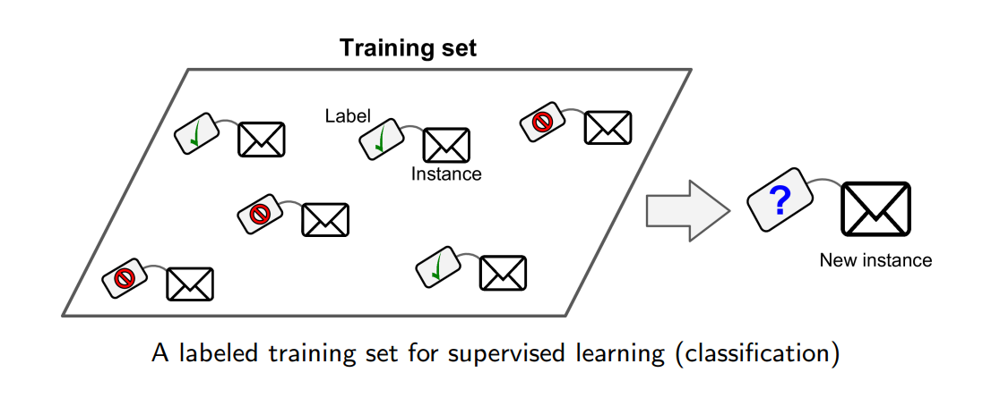
훈련 세트Training set의 메일 하나하나(사례instance)에 정상(✓) 또는 스팸 레이블Label이 붙어 있습니다. 학습이 끝난 모델은 레이블이 없는 새 메일New instance(?)을 보고 둘 중 하나를 고릅니다.
회귀 Regression — 숫자를 예측
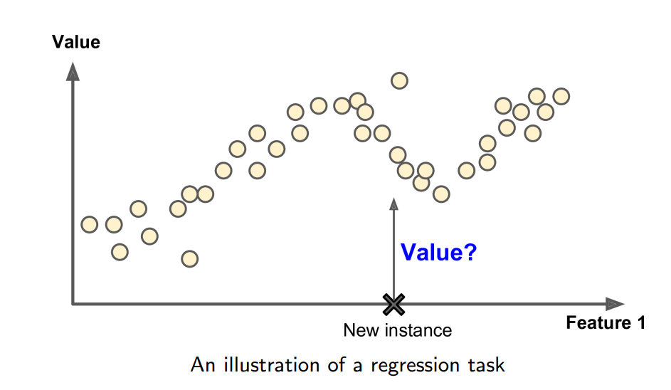
가로축 특성 1Feature 1은 입력값, 세로축 값Value은 맞혀야 하는 숫자입니다. 점들은 훈련 데이터입니다.
새 입력(✖)이 들어오면 점들이 그리는 흐름을 따라 그 위치의 값(Value?)을 추정합니다.
입력 데이터를 이루는 측정값 하나하나입니다. 표로 치면 열(column) 하나. 집값 예측이라면 면적, 방 개수, 역까지 거리가 각각 특성입니다.
대표적인 지도 학습 알고리즘 (교안 p.13)
| 한국어 | English | 한 줄 설명 (보충) |
|---|---|---|
| 선형 회귀 | Linear regression | 데이터에 가장 잘 맞는 직선(y = ax + b)을 찾아 숫자를 예측 — 회귀 |
| 로지스틱 회귀 | Logistic regression | 클래스에 속할 확률(0~1)을 계산해 분류 — 이름과 달리 분류 |
| k-최근접 이웃 | k-Nearest neighbors | 가장 가까운 훈련 데이터 k개의 다수결 — 5주차 1차시 |
| 결정 트리와 랜덤 포레스트 | Decision trees and random forests | 예/아니오 질문을 트리로 이어 판단. 랜덤 포레스트는 트리 여러 개의 다수결 |
| 서포트 벡터 머신 | Support vector machines | 두 클래스 사이의 간격(margin)이 가장 넓어지는 경계선을 찾음 |
| 신경망 | Neural networks | 층을 여러 개 쌓은 계산 구조. 깊게 쌓은 것이 딥러닝(09) |
로지스틱 회귀는 이름에 '회귀'가 붙지만 확률을 출력해 주로 분류에 쓰입니다(교수님이 설명하신 내용 아님).
비지도 학습 Unsupervised Learning
훈련 데이터에 레이블이 없습니다. 시스템은 교사나 감독 없이 학습하려고 합니다.
그래서 목표는 "정답 맞히기"가 아니라 데이터 자체의 구조를 찾는 것입니다. 교안의 대표 작업 네 가지:
- 비슷한 것끼리 묶기 — 군집화
- 사람이 볼 수 있게 펼치기 — 시각화
- 정보를 유지하며 줄이기 — 차원 축소
- 튀는 것 찾기 — 이상치 탐지
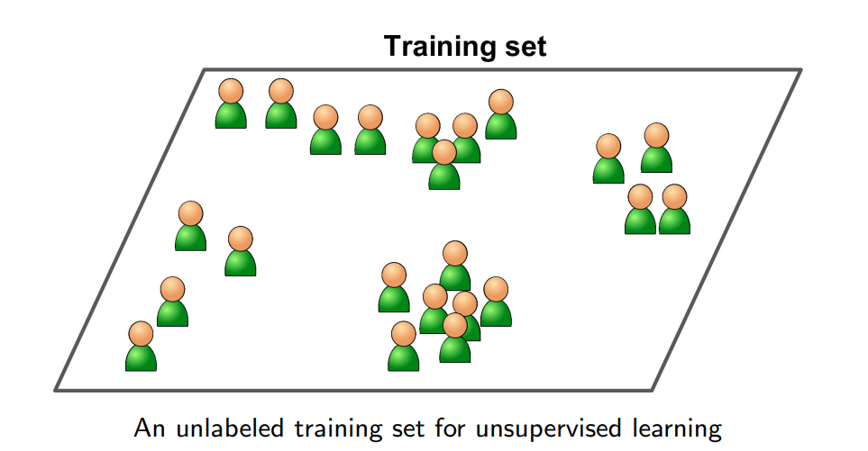
① 군집화 Clustering
군집cluster은 서로 '비슷한' 객체들의 모임이며, 다른 군집의 객체와는 '비슷하지 않은' 집합입니다.
사람 아이콘은 레이블이 없는 데이터입니다. 알고리즘은 "누가 어느 그룹"이라는 정보 없이 점들 사이의 거리만 보고 가까운 것끼리 묶어, 점선 경계로 4개 군집을 만들었습니다.
군집이 무엇을 뜻하는지(예: "주말에만 방문하는 고객")는 알고리즘이 알려주지 않습니다. 결과를 보고 사람이 해석합니다.
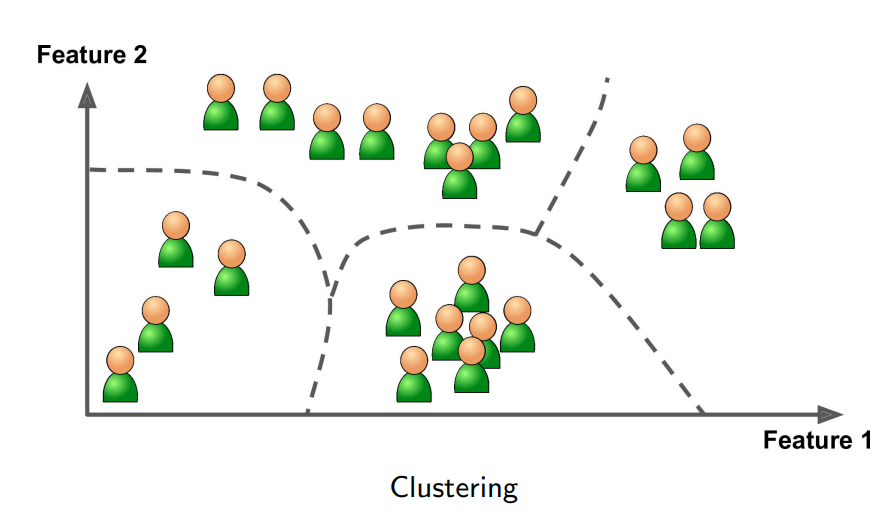
② 시각화 Visualization — t-SNE
t-SNEt-distributed Stochastic Neighbor Embedding는 데이터의 국소 구조local structure를 보존하면서 고차원 데이터를 2차원이나 3차원으로 줄여 시각화하는 데 쓰입니다.
"고차원"이란: 이 10개 클래스(CIFAR-10 데이터셋과 같음)의 이미지 한 장은 32×32 픽셀 × 색 3개 = 3,072개의 숫자입니다. 즉 3,072차원 공간의 점 하나입니다. 사람은 볼 수 없으므로, 가까운 점은 가깝게 유지하며 평면에 옮겨 그린 것이 오른쪽 그림입니다.
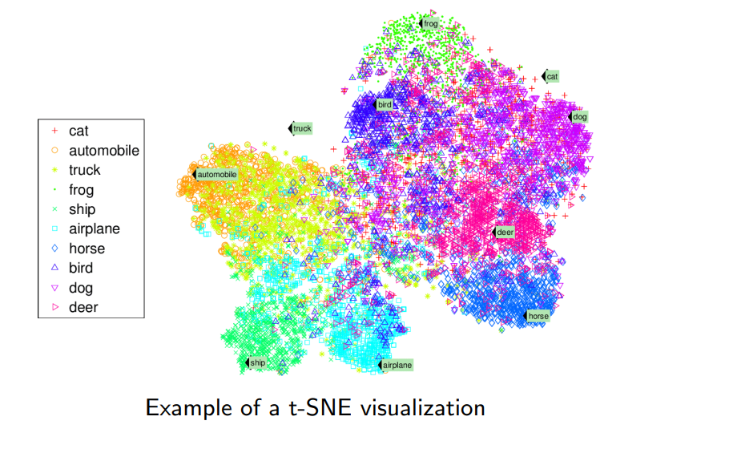
t-SNE 그림에서 읽을 수 있는 것
| 위치 | 클래스 |
|---|---|
| 왼쪽 | automobile · truck — 서로 붙어 있음 |
| 아래 | ship · airplane — 서로 인접 |
| 위 | frog (맨 위), bird (위 가운데) |
| 오른쪽 | dog (위), deer (가운데), horse (아래) |
| 넓게 퍼짐 | cat — bird·dog·deer 영역과 겹침 |
비슷한 클래스끼리 가까이 모였고, 탈것(automobile·truck·ship·airplane)과 동물 영역이 크게 나뉩니다.
보충(교수님 설명 아님): cat은 한곳에 모이지 않고 다른 동물과 섞여 있어, 이 2차원 공간에서는 다른 클래스와 구분이 가장 어려운 클래스로 보입니다.
③ 차원 축소 Dimension Reduction
고차원 데이터를 다룰 때는, 데이터의 본질을 담는 더 낮은 차원의 부분공간lower dimensional subspace으로 투영projecting해 차원을 줄이는 것이 유용한 경우가 많습니다.
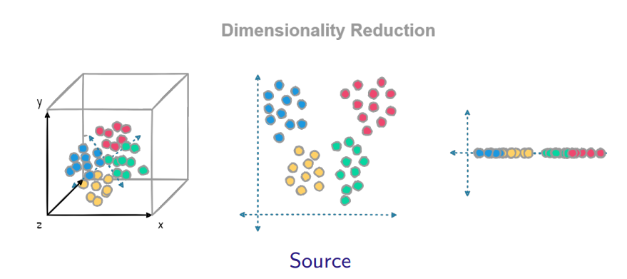
보충: 3D에서 섞여 있던 점들이 2D로 투영하자 4개 무리로 뚜렷이 나뉩니다. 1D까지 줄이면 초록과 빨강이 겹칩니다 — 너무 많이 줄이면 구분에 필요한 정보까지 잃을 수 있습니다.
②와 ③은 둘 다 차원을 줄이지만 목적이 다릅니다. 시각화는 사람이 보기 위해 2·3차원까지, 차원 축소는 정보를 유지하며 계산량을 줄이기 위해 줄입니다.
④ 이상치 탐지 Outlier (Anomaly) Detection
대다수 데이터에서 크게 벗어난 관측값이나 데이터 포인트를 찾아내는 과정입니다.
회색 점(훈련 사례Training instances)은 대부분 정상 데이터이고, 모델은 이것으로 "정상이 어디에 모여 있는지"를 배웁니다. 새 사례 두 개 중 초록 X는 무리 안쪽이라 정상Normal, 빨간 X는 멀리 떨어져 이상치Anomaly입니다.
대표적인 쓰임: 신용카드 부정 사용 탐지, 공장 불량품 검출, 서버 침입 탐지
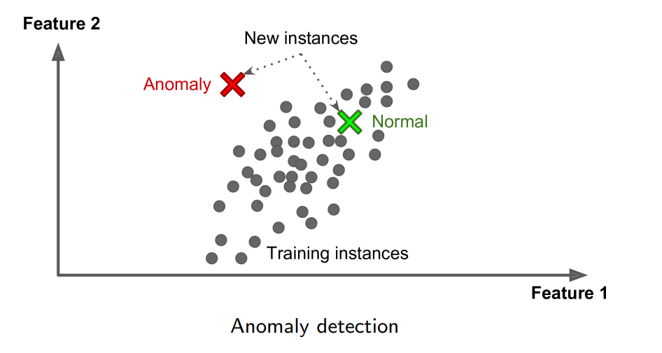
강화 학습 Reinforcement Learning
학습하는 시스템을 에이전트agent라고 부릅니다. 에이전트는 환경environment을 관찰하고, 행동action을 골라 수행하며, 그 결과로 보상reward이나 벌점penalty을 받습니다.
시간이 지나면서 보상을 최대화하는 최선의 전략, 즉 정책policy을 스스로 학습해야 합니다.
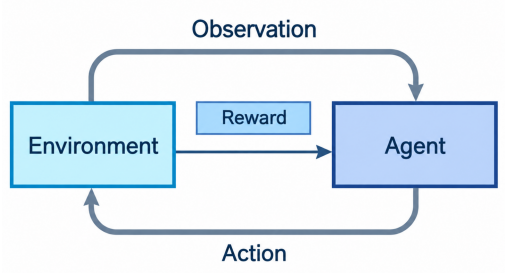
교안 예시 — 불과 물통 (6단계)
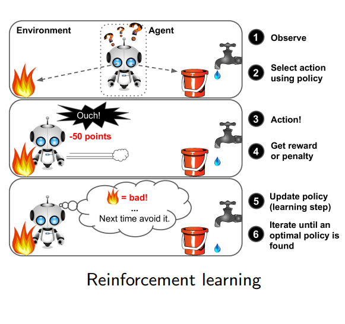
| 단계 | 장면 |
|---|---|
| ① 관찰 Observe | 왼쪽에 불, 오른쪽에 물통과 수도꼭지 |
| ② 행동 선택 Select action using policy | 정책에 따라 행동을 고름 |
| ③ 행동 Action! | 불 쪽으로 이동 → "Ouch!" |
| ④ 보상·벌점 Get reward or penalty | −50 points 벌점 |
| ⑤ 정책 갱신 Update policy (learning step) | "불 = bad! 다음엔 피하자" |
| ⑥ 반복 Iterate until optimal | 최적 정책을 찾을 때까지 |
정책이 어떻게 바뀌는지에 초점을 맞추면
지도 학습과 가장 큰 차이는, 강화 학습에는 "이 상황에서는 이 행동이 정답"이라는 데이터가 없다는 점입니다. 직접 해 보고, 받은 보상·벌점으로 판단 기준을 스스로 고칩니다.
처음 정책에는 불에 대한 정보가 없어 불 쪽으로 갈 수 있습니다(①–③). −50점을 받고(④) 정책을 "불 쪽으로 가는 행동은 피한다"로 고칩니다(⑤). 반복하면 벌점을 받지 않는 행동만 고르는 정책이 남습니다(⑥).
3주차의 알파고와 스타크래프트2의 알파스타가 강화 학습을 활용한 대표 사례입니다. 3장의 지능형 에이전트(센서로 인지 → 행위자로 행동)도 같은 틀입니다.
배포한 뒤에도 계속 배울 수 있는가
| 배치 학습Batch Learning | 온라인 학습Online Learning | |
|---|---|---|
| 점진적 학습 | 불가 — 가용한 데이터 전부로 학습해야 함 | 가능 — 데이터를 미니배치mini batches로 나눠 순차적으로 공급 |
| 비용 | 시간과 컴퓨팅 자원이 많이 들어 보통 오프라인에서 수행 | 학습 단계 하나가 빠르고 저렴 → 새 데이터를 반영해 점진적으로 갱신 |
| 배포 후 | 먼저 학습 → 운영production 투입, 이후엔 배운 것만 적용 = 오프라인 학습offline learning | 운영 중에도 새 데이터로 계속 학습 Run and learn, on the fly |
| 적합 | — | 데이터가 연속적으로 흘러들어오고 변화에 빨리 적응해야 하는 시스템 |
배치 학습에 비해 온라인 학습은 더 빠릅니다.
교안 표현은 "학습 단계 하나하나가 더 빠르고 더 저렴하다"입니다. 새 데이터가 올 때마다 전체 데이터로 처음부터 다시 학습하지 않고, 들어온 미니배치만으로 모델을 조금 고치기 때문입니다.
그래서 새 데이터를 반영하는 속도가 빠르고 변화에 빨리 적응합니다. 전체 데이터를 한 번 학습하는 총 시간이 항상 짧다는 뜻은 아닙니다.
두 방식이 새 데이터를 반영하는 법
배치 학습 — 조금씩 배우는 것이 안 되므로, 새 데이터를 반영하려면 새 데이터를 합친 전체 데이터로 처음부터 다시 학습하고 기존 모델과 교체합니다. 오래 걸리므로 보통 하루나 일주일 단위로 합니다.
온라인 학습 — 작은 묶음(미니배치)을 하나씩 넣을 때마다 모델을 조금씩 고칩니다. 대신 잘못된 데이터도 곧바로 반영되어 성능이 떨어질 수 있으므로, 들어오는 데이터를 감시해야 합니다.
그림: 모아 둔 데이터로 학습·평가 후 출시(Launch) → 이후 실시간 새 데이터New data, on the fly로 운영하며 계속 학습(Run and learn)
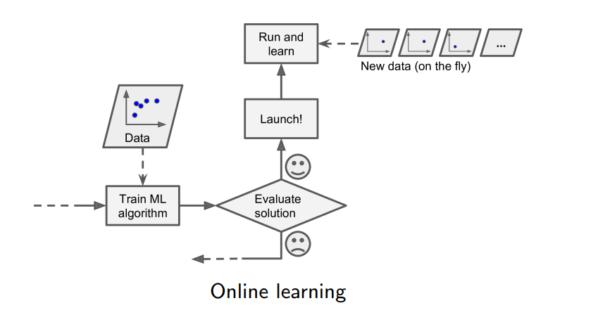
대용량 데이터와 외부 메모리 학습 out-of-core learning
온라인 학습 알고리즘은 컴퓨터 한 대의 주기억장치에 다 들어가지 않는 거대한 데이터셋을 학습할 때도 쓸 수 있습니다. 이것을 외부 메모리 학습이라 합니다.
데이터 일부를 불러와 학습 단계를 수행하고, 전체를 다 돌 때까지 반복합니다 = 점진적 학습incremental learning.
그림: 대량의 데이터를 조각으로 나눈 뒤Chop into pieces 하나씩 온라인 ML 알고리즘에 넣습니다. 나머지 평가·출시·오류 분석 순환은 앞의 순서도와 같습니다.
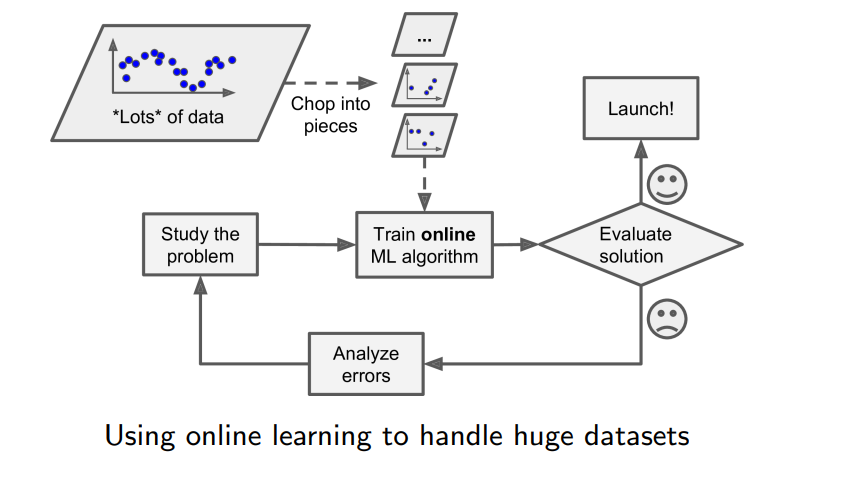
"온라인"의 뜻 주의 보충
외부 메모리 학습은 보통 운영 전(오프라인)에 이루어집니다.
그래서 여기서 "온라인 학습"은 "운영 중에 배운다"가 아니라 "데이터를 조금씩 나눠 점진적으로 배운다"는 뜻으로 읽어야 합니다.
이런 이유로 참고 교재(Géron)는 "점진적 학습incremental learning"이라는 이름이 더 정확하다고 설명합니다.
주기억장치(RAM)에 한 번에 올릴 수 없는 데이터를 조각으로 나눠 순서대로 처리한다는 점에서, 대용량 파일을 버퍼 단위로 읽는 방식과 같은 발상입니다.
여기까지 정리
09 AI·ML·DL · 10 정의 · 11 전통 vs ML · 12 학습 · 13 분류 기준 · 14–16 지도·비지도·강화 · 17 배치·온라인
- AI ⊃ 기계학습 ⊃ 딥러닝 ⊃ 생성형 AI. 규칙을 사람이 쓰면 AI(ML 아님), 데이터에서 찾으면 ML, 신경망으로 특징까지 찾으면 DL.
- Samuel: 명시적 프로그래밍 없이 학습 · Mitchell: 경험 E로 작업 T의 성능 P가 오르면 학습.
- 전통 방식은 사람이 규칙 작성, ML은 데이터로 학습 → 재학습 순환을 자동화. 일반화 = 학습에 안 쓴 (같은 종류의) 새 데이터에서도 잘 동작.
- 학습 = 추론(Induction, 귀납). 데이터는 싸고 지식은 비싸다. 모델은 근사.
- 지도 {(xᵗ, yᵗ)} 분류·회귀 · 비지도 {xᵗ} 군집화·시각화·차원 축소·이상치 · 강화 = 에이전트·보상·정책.
- 배치 = 전부로 한 번에(오프라인) · 온라인 = 미니배치로 점진적, 학습 단계가 빠르고 저렴 · 외부 메모리 학습.
동영상 1 · 로보틱스 메타플랜트 응용 센터 가동
"백덤블링 하던 로봇, 이젠 현대차 조립"…아틀라스, 현장 학습 돌입 · JTBC 뉴스 · 1분 24초 | 수업 시간에 보지 않은 영상. 시험 범위가 아닐 가능성이 높음(추측)
| 무엇 | 보스턴 다이내믹스Boston Dynamics의 휴머노이드 로봇 아틀라스Atlas가 제조 현장 투입 전 본격 학습에 들어감 |
| 장소 | 미국 조지아주 현대차그룹 메타플랜트 아메리카 안의 로보틱스 메타플랜트 응용 센터 — 실제 공장과 똑같이 꾸민 공간 |
| 익히는 작업 | 물류 작업 준비, 부품을 조립 순서대로 놓는 서열 작업kitting |
| 학습 데이터 | 고글을 쓴 작업자가 로봇을 원격 조종하고, 이렇게 쌓인 동작이 학습 데이터가 됨 |
| 계획 | 2030년까지 부품 조립으로 확대, 이후 고강도 작업 투입 · 현대차·기아 전 세계 사업장에 2만 5천 대 배치 · 미국에 연간 3만 대 생산 시설 · 내년 훈련 시설 약 10배 확대, 항공우주·반도체·물류로 확장 |
연결: 2주차 2차시의 보스턴 다이내믹스입니다. 사람이 조종한 동작을 학습 데이터로 쓰는 것은, 규칙을 사람이 직접 쓰는 Part 1이 아니라 데이터에서 학습하는 Part 2 방식입니다.
동영상 2 · 메타 뮤즈 Meta Muse
메타가 공개한 AI 에이전트 뮤즈, 사람 대신 어디까지 할까? · 안될과학 · 10분 11초 | 수업 시간에 보지 않음, 시험 범위 아닐 가능성 높음(추측)
메타가 2026년 9월 8일 미국·캐나다에 공개한 개인용 AI 에이전트AI agent. 질문에 답만 하는 생성형 AI와 달리 이메일·쇼핑·예약 같은 실제 작업을 사람 대신 수행합니다. 한국에서는 아직 쓸 수 없습니다.
09의 생성형 AI가 결과물을 만드는 AI라면, AI 에이전트는 목표를 받으면 웹 탐색·서비스 접속·결제까지 하며 작업을 끝까지 수행합니다. 3장의 지능형 에이전트를 웹·앱 환경에서 구현한 것으로 볼 수 있습니다.
반응 10일 만에 미국 iOS 무료 앱 1위, 13일 만에 약 250만 다운로드 추정, 2주간 메타 주가 약 21% 상승
보안 사용자별 격리 VM, 외부 통신은 승인 에이전트 Sentinel을 거침, 결제는 별도 시스템
쓰임 공유 사례 390건 중 절약(환불·요금 인하·구독 해지) 77건, 약 20%
문제 내부 테스트 중 멈춤·오류, iCloud 사진 노출 사고(로이터)
충돌 9월 20일 아마존이 접속 차단 — 검색 광고 수익과 충돌
뮤즈를 수업 내용과 연결해서 보면
보안 — 모델이 아무리 똑똑해도 악의적인 웹페이지에 심어진 지시에 속을 수 있습니다. 이런 공격을 프롬프트 인젝션prompt injection이라 부릅니다. 그래서 모델 하나를 믿지 않고 시스템 차원에서 여러 겹의 보안을 둡니다.
개인정보 — 에이전트는 이메일·결제·금융 계좌를 다룹니다. 메타는 광고에 쓰지 않는다고 밝혔지만 지켜지는지 계속 봐야 한다고 영상은 말합니다.
사람의 확인 — AI 결제가 "매우 편하다"는 소비자 16%, 최종 결제를 본인이 확인하는 조건이면 37%.
격리 VM, 외부 통신 검사, 카드 번호를 에이전트에 넘기지 않는 결제 분리 = 시큐어코딩의 최소 권한·격리 원칙. 개인정보 처리 쟁점 = 개인정보보호법률이해.
자동 번역 자막이라 일부 고유명사(OpenInterpreter, Muse CQ VM, Comma, EBA)는 그대로 믿기 어려워 본문에 넣지 않았습니다.
용어 정리 ① — Part 1
| 명제proposition | 참/거짓이 하나로 정해지는 문장. 거짓이어도 명제다. |
| 조건(함축)implication | p → q. p가 T이고 q가 F일 때만 F. p가 F면 항상 T. |
| 술어 논리predicate logic | 문장을 대상과 술어로 나눠 표현. 예: 남자(영철). |
| 연역 · 귀납 · 유비 | 전제 → 결론(필연) / 사례들 → 일반 규칙(확장) / 유사성으로 추론. |
| DFS · BFS | 한 갈래 끝까지 후 되돌아옴 / level 순서대로. 둘 다 무정보 탐색. |
| 휴리스틱heuristic | 경험 바탕의 직관적 판단. 최적 보장은 없지만 빠르고 실용적. |
| A* 알고리즘 | 평가 함수 f로 다음 경로를 정해 최적 경로를 찾는 최상 우선 탐색. |
| 전문가 시스템expert system | 전문가 지식을 담은 지식베이스 + 추론기구로 질문에 답하는 시스템. |
용어 정리 ② — Part 2
| 기계학습Machine Learning | 명시적으로 프로그래밍하지 않고 데이터(경험 E)로 작업 T의 성능 P가 좋아지는 프로그램. |
| 일반화generalization | 학습에 안 쓴 (같은 종류의) 새 데이터에서도 잘 동작하는 능력. |
| 추론(귀납)Induction | 특정한 예시들에서 일반적인 규칙을 뽑아내는 과정 = 기계학습의 학습. |
| 레이블label | 훈련 데이터에 붙은 정답. 있으면 지도 학습, 없으면 비지도 학습. |
| 분류 · 회귀 | 이산적 레이블 예측 / 연속적 수치 예측. 둘 다 지도 학습. |
| 군집화clustering | 레이블 없이 비슷한 것끼리 묶기. 비지도 학습. |
| 정책policy | 강화 학습에서 상황별로 어떤 행동을 할지 정한 규칙. |
| 온라인 학습online learning | 미니배치로 나눠 점진적으로 학습. 학습 단계가 빠르고 저렴하다. |
확인 필요 — 아직 답이 필요한 질문
교안: "대전제 - 소크라테스는 사람이다 / 소전제 - 사람은 모두 죽는다". 일반적인 정의(대전제 = 일반 규칙, 소전제 = 개별 사실)와 반대입니다. 교수님이 교안대로 설명하시는지 확인이 필요합니다.
표 6.5는 "백혈병 진단", 3주차 1차시(3장)는 "혈액감염 치료 진단과 처방". 시험에 어느 쪽을 쓸지 확인이 필요합니다.
p.9 분류 기준에 semi-supervised가 나오지만 설명 슬라이드가 없습니다. 수업에서 설명하시면 보내주세요.
- 표 6.4 머리글 ~p → q → p → q (교수님이 수업에서 오류라고 확인)
- p.14 "대전체" → 대전제
- p.11 "x2＋5x + 6＝0" → x² + 5x + 6 = 0
- p = T, q = T
- p = T, q = F
- p = F, q = T
- p = F, q = F
BFS: A → B → C → D → E → F (level 0 → 1 → 2 순서)
- 사람은 모두 죽는다. 소크라테스는 사람이다. 따라서 소크라테스는 죽는다.
- 관찰한 까마귀 100마리가 모두 까맣다. 따라서 모든 까마귀는 까맣다.
- 양말이 발에 신는 것이듯, 장갑은 손에 끼는 것이다.
- p → q이고 q → r이므로 p → r이다.
추론기구(inference engine): 사용자가 질문하면 지식베이스의 사실과 규칙으로 추론해 결론을 만들어 대답한다.
원서에 다시 나올 단어 ①
| inference /ˈɪnfərəns/ n. | 추론 — 알려진 사실과 규칙에서 새로운 결론을 이끌어내는 것 The expert system uses rules for inference. 전문가 시스템은 추론에 규칙을 사용한다. |
| proposition /ˌprɑːpəˈzɪʃn/ n. | 명제 — 참이나 거짓 중 하나로 정해지는 문장 A proposition is either true or false. 명제는 참이거나 거짓이다. |
| heuristic /hjʊˈrɪstɪk/ n. / adj. | 휴리스틱, 경험적인 — 최적은 보장하지 않지만 빠르게 쓸 만한 답을 찾는 방법 A* uses a heuristic to guess the distance to the goal. A*는 목표까지의 거리를 추정하려고 휴리스틱을 쓴다. |
| generalize /ˈdʒenrəlaɪz/ v. | 일반화하다 — 학습에 쓰지 않은 새 데이터에도 잘 맞게 동작하다 A good model can generalize to new data. 좋은 모델은 새 데이터에도 일반화할 수 있다. |
원서에 다시 나올 단어 ②
| label /ˈleɪbl/ n. | 레이블 — 훈련 데이터에 붙은 정답 Each email has a label: spam or not spam. 각 메일에는 스팸인지 아닌지 레이블이 붙어 있다. |
| anomaly /əˈnɑːməli/ n. | 이상치, 변칙 — 대부분의 데이터에서 크게 벗어난 값 The red X is far from the others, so it is an anomaly. 빨간 X는 다른 점들과 멀리 떨어져 있어서 이상치다. |
| agent /ˈeɪdʒənt/ n. | 에이전트 — 환경을 관찰하고 행동하는 주체(강화 학습에서 학습하는 시스템) The agent gets a reward after each action. 에이전트는 행동할 때마다 보상을 받는다. |
| incremental /ˌɪŋkrəˈmentl/ adj. | 점진적인 — 조금씩 차례로 더해 가는 Online learning is incremental. 온라인 학습은 점진적이다. |
필기 원문 — 수업 중 보내주신 그대로
| 01 15:14 | 교안 6-1 4 조건 또는 함축에서 표에 오류 있음 ~p → q 아니고 p → q 라고 하심 | → 02 명제와 논리 연산 |
| 02 15:37 | 09 AI ML DL 생성형 AI(generative ai)가 deep learning 안에 있는거임 | → 09 |
| 03 15:45 | 어떤 내용의 데이터가 들어와도 읽을 수 있게 하는걸 머신러닝의 일반화라고 한다고 함(맞아?) 11 머신러닝을 쓰는 이유에서 설명하심 | → 11 |
| 04 15:47 | 12에서 induction은 추론이라고 번역해줘 교수님이 추론이라고 하셔서 그래. 병기해줘. 이해할 수 있게 | → 12 |
| 05 09/29 09:36 | 영상이 하나 더 있어. 동영상 2: Meta Muse | → 19 |
| 06 09/29 11:35 | 배치학습에 비해 온라인학습이 좋은 이유 더 빠름 18 전까지 함(18부터는 5-1 수업 때 이어서) 동영상 2개는 알아서 보기(수업시간에 따로 보진 않았고 시험범위도 아닐거임. 보통 영상은 그냥 교수님이 견문 넓히라고 볼만한거 들고오셔. 그런거같지?) | → 17 · 18 |